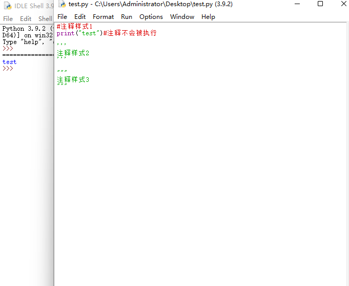
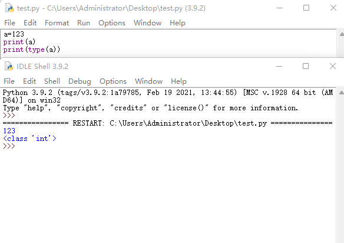
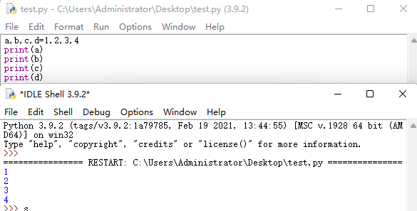
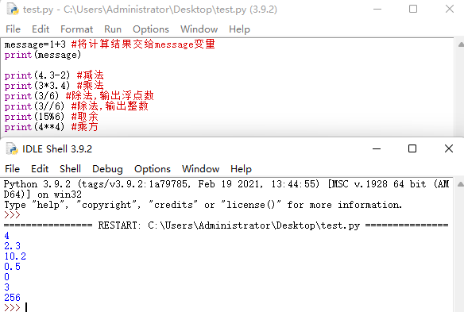
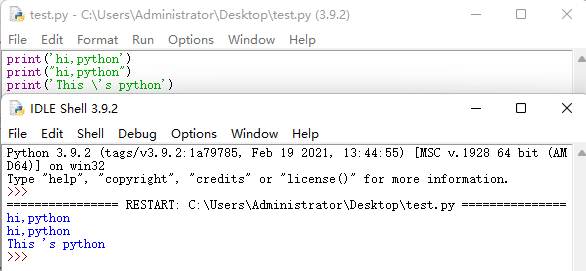
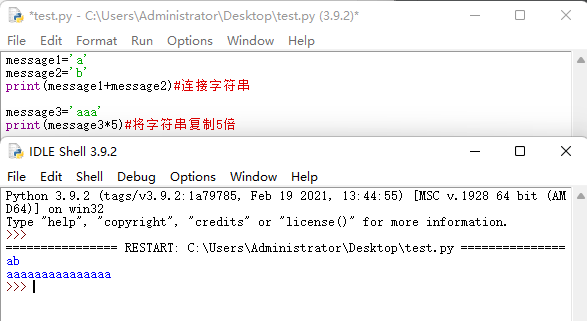
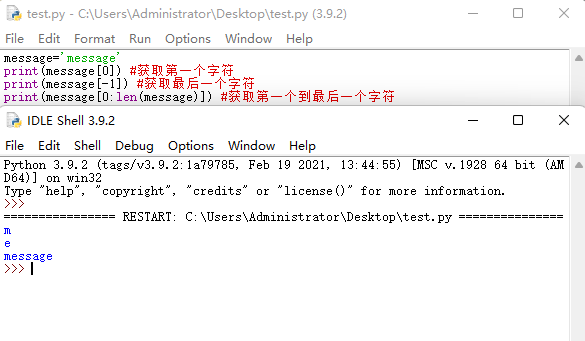

python中三种注释的样式 # ''' """

变量
变量命名规则:
1.变量由字母,数字,下划线组成,但不能以数字开头
2.变量不能是Python的关键字,但变量中可以包含关键字
3.变量不能包含空格
基本数据类型
Python中变量不需要声明数据类型,而是直接创建。变量类型可通过type()查看
isinstance(变量,数据类型) 也可以用来判断数据类型，返回 true 或 false

Python可以同时对多个变量赋值

数值运算

字符串
Python中字符串由单引号或双引号, \可用于转义其他字符

+ 可以连接字符串 * 可复制字符串的倍数

Python中也可通过索引截取字符串 len() 可计算字符串中字符的个数

数据类型转换